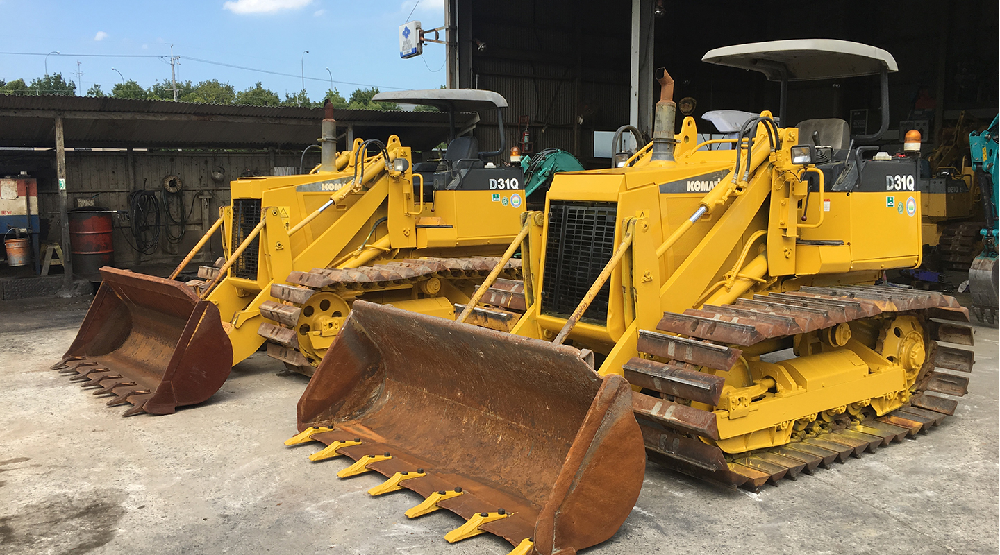

大型重機への対応力
現場の条件と規模に応じた重機を配置。掘削、積込、整地、敷均し、盛土まで、大規模土工の要となる工程を担います。
LARGE-SCALE EARTHWORKS / KINKI
大型重機、熟練の人材、施工・運搬の連携力。
大和建設は、造成と公共インフラの現場を前へ進めます。

ABOUT DAIWA
大和建設は、重機土工を中心に、工事・運輸までを担う建設会社です。大規模な造成から、道路、河川、上下水道まで。人々の暮らしに欠かせない基盤づくりに向き合います。
大和建設の事業を知るOUR FIELD POWER
現場の条件と規模に応じた重機を配置。掘削、積込、整地、敷均し、盛土まで、大規模土工の要となる工程を担います。
経験あるオペレーターと施工管理者が、安全と品質を最優先に、難しい現場にも誠実に向き合います。
工事・重機・運輸の連携により、土工から現場内外の運搬まで、工程を見据えた対応を行います。
SELECTED WORKS
都市土木、河川・海岸、道路、上下水道、造成など。多様な現場で積み重ねてきた経験を、次の工事へつなげます。
TRUST & QUALITY
安全第一を基本に、日々の点検、技術力向上のための教育・講習、現場での連携を積み重ねます。
会社概要、施工実績、許可・認証、拠点・施設など、会社の信頼性を支える情報を、分かりやすく公開します。
会社情報を見る